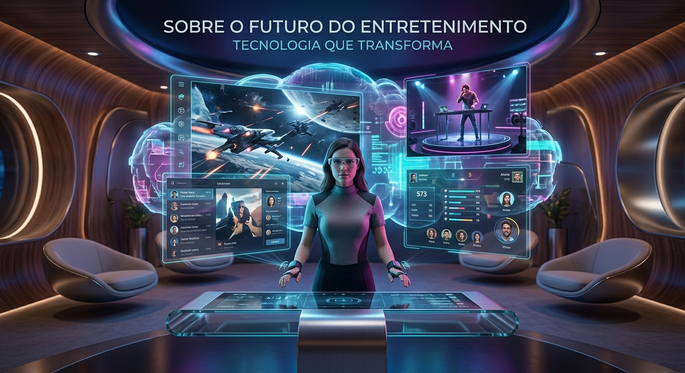

TECNOLOGIA QUE TRANSFORMA
Descrição de destaque do festival

Descrição de destaque do festival

Legenda de Imagem Gerada por IA
Legenda de Imagem Gerada por IA

Legenda de Imagem Gerada por IA

Legenda de Imagem Gerada por IA

Legenda de Imagem Gerada por IA

Legenda de Imagem Gerada por IA
| Horário | Nome da Palestra | Localização |
|---|---|---|
| 09:30 - 10:30 | Colaboração entre Humanos e Máquinas no Dia a Dia | 1º Andar - Auditório Turing |
| 10:45 - 11:45 | Low-code e o Futuro do Desenvolvimento Acessível | 2º Andar - Sala Lovelace (Workshop) |
| 13:30 - 14:30 | Green Tech e Soluções para a Crise Climática | 1º Andar - Auditório Turing |
| 14:45 - 15:45 | Proteção de Dados em um Mundo Hiperconectado | 3º Andar - Sala Hacker |
| 16:00 - 17:00 | Algoritmos, Streaming e a Nova Economia Criativa | 2º Andar - Espaço Imersivo |
| 17:15 - 18:15 | De Wearables à Telemedicina - A Revolução do Cuidado | 3º Andar - Sala Vida Digital |